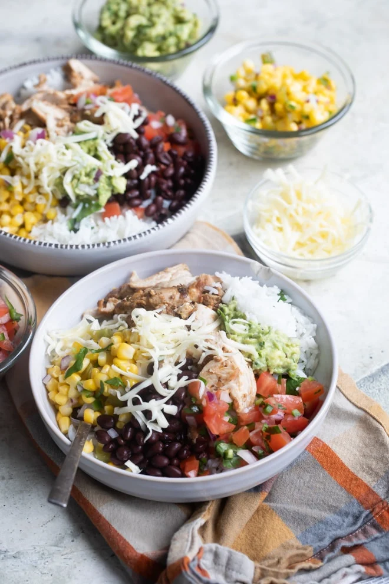

Chipotle Burrito Bowl

Description
Meal Description
Meal Description
Ingredients
1/4 medium red onion coarsley chopped
2 cloves garlic
1 tablespoon adobo sauce
1 tablespoon ancho chile powder
1 tablespoon olive oil plus 1 tablespoon for oiling the pan
1 teaspoon ground cumin
1 teaspoon dried oregano
Salt and freshly ground black pepper
2 pounds boneless, skinless chicken thighs
li>1 cup basmati rice
1 bay leaf
salt
1 tablespoon fresh cilantro minced
1 tablespoon fresh lemon juice from 1 lemon
tablespoon fresh lime juice from 1 lime
12 ounces frozen corn
1/4 cup red onion finely chopped
1 medium roasted poblano pepper diced
1 jalapeno pepper stemmed, seeded, and finely chopped
2 tablespoons fresh cilantro minced
1 1/2 teaspoons fresh lemon juice from 1 lemon
1 1/2 teaspoons fresh lime juice from 1 lime
salt
1 pound tomatoes cut into 1/4-inch pieces
1/4 cup red onion finely chopped
1/4 cup fresh cilantro minced
3 jalapeno peppers seeded, stemmed, and finely chopped
2 teaspoons fresh lime juice from 1 lime
salt
2 large avacados halved and pitted
1 teaspoon fresh lemon juice from 1 lemon
1 teaspoon fresh lime juice from 1 lime
1/4 cup red onion finely chopped
1-2 teaspoons fresh cilantro minced
1/2 jalapeno peppers seeded, stemmed, and finely chopped
salt
For assembling the bowls:
1 (15 ounce) can black beans rinsed and drained
2 cups shredded cheddar cheese
Instructions
To make the chicken:
To the bowl of a food processor or blender, add red onion, garlic, adobo sauce, ancho chile powder, olive oil, cumin, dried oregano, ½ teaspoon salt, and ¼ teaspoon pepper. Blend until smooth. Pour into a measuring cup and add water to reach ½ cup.
Place the chicken in a large freezer-safe plastic bag. Pour in marinade, close the bag, and mash until chicken is evenly coated. Place the plastic bag in a dish and refrigerate at least 30 minutes or overnight.
Heat 1 tablespoon olive oil in a large skillet until shimmering. Add chicken to the pan and cook, turning occasionally, until the temperature reaches 165 degrees on an internal thermometer. Remove to a cutting board and chop into small pieces. Season to taste with salt.
To make the rice:
Bring 4 cups water to a boil in a large pot. Add rice, bay leaf, and salt to taste (I like 1 teaspoons). Stir and return to a boil. Boil uncovered for 10 to 12 minutes.
Remove bay leaf. Using a fine mesh strainer, drain rice and rinse with hot water. Pour into a large bowl. Stir in cilantro, lime juice, and lemon juice. Season to taste with salt.
To make the corn salso:
Cook corn according to package directions. Spread on a baking sheet to cool. To a large bowl, add cooled corn, red onion, jalapeño peppers, poblano pepper, cilantro, lemon juice, and lime juice. Season to taste with salt. Serve with tortilla chips.
To make the tomato salsa:
In a medium bowl, combine tomatoes, red onion, cilantro, jalapeño, and lime juice. Season to taste with salt.
To make the guacamole:
In a medium bowl, combine avocados, lemon juice, and lime juice. Mash until smooth. Stir in red onion, jalapeño, and cilantro. Season to taste with salt (I like ½ teaspoon).
To assemble the bowls:
Build each bowl with an equal amount of chicken, rice, black beans, corn salsa, tomato salsa, guacamole, and shredded cheese.